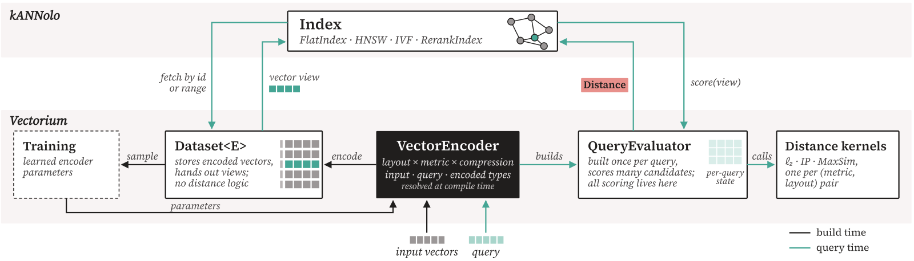
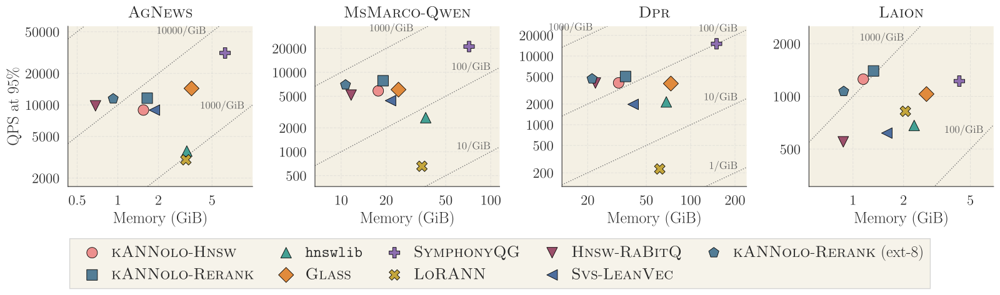
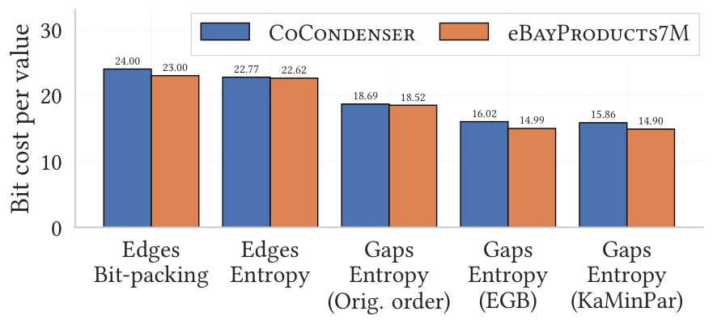
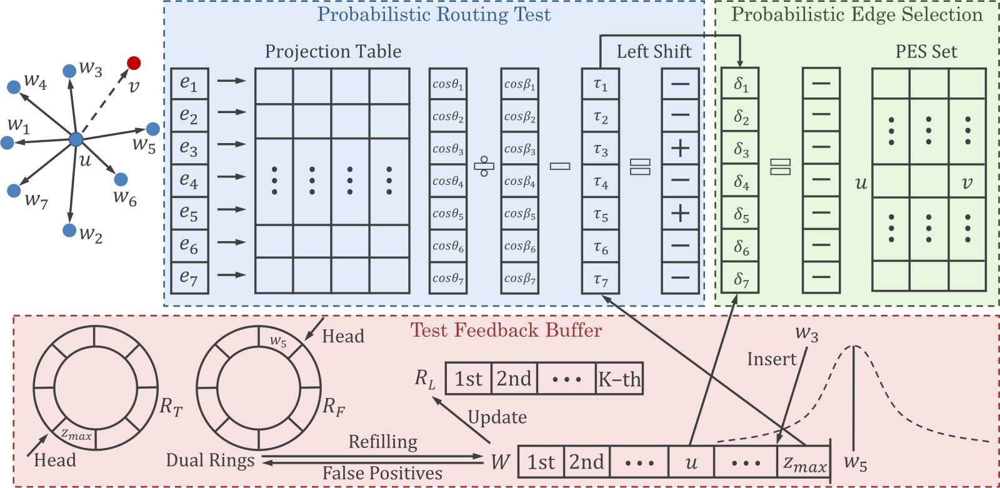
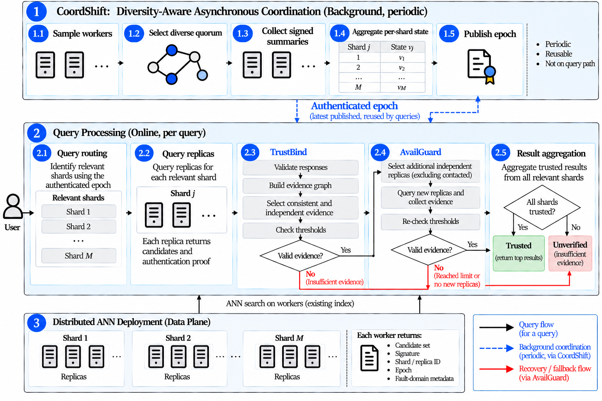

做向量检索时，换一种 embedding 形态或量化方式，往往就得换一个库。现有的 ANN 库要么只支持一种组合，要么每种组合各写一份代码，没有一个 ANN 库在同一套接口下覆盖稠密、稀疏和多向量三种 embedding。作者为此开源了两个 Rust 库：Vectorium 负责存向量、算距离和做量化，kANNolo 在它上面实现 HNSW、IVF 等索引。任意组合都在编译时生成专用代码，所以拆成模块不会拖慢运行速度。它的两段式 HNSW 先在压缩过的向量上找候选，再用更精确的向量重新打分。在稠密数据上要求 99% 的召回率时，它每秒处理的 query 是 HNSW 参考实现的 2.5 到 3.3 倍，索引只有一半大。同时做稠密和稀疏检索的团队值得读，因为它说明了模块化和速度可以兼得，代价放在编译时。
它到底在解决什么问题？
先看一个示意场景。一个问答搜索团队有两路召回：一路是 768 维的稠密 embedding，一路是 SPLADE 这类学出来的稀疏向量。现在团队想做三件事。
| 想做的事（示意） | 常见做法 |
|---|---|
| 稠密召回把 PQ 换成 RaBitQ | 换一个实现了 RaBitQ 的库，重写建索引和查询代码 |
| 稀疏召回也用图索引 | 再找一个支持稀疏向量的图索引库 |
| 稀疏召回的候选用多向量模型重新打分 | 自己写胶水代码，把两个库的结果按 id 对上 |
问题在于，向量形态、索引结构、距离和压缩方式这四件事基本互相独立，可现有的库把它们绑在一起。Faiss 是用得最广的稠密向量库，它给“索引结构 × 量化器”的每种组合各写一个类，每个类有自己的建索引和查询代码。组合越多，代码越多，加一种新量化器就要改很多处。较新的模块化库只拆开了一边：ParlayANN 和 ANNLib 拆的是图索引这边，Glass 拆的是量化这边。
这篇论文的贡献是把这四件事都拆开：索引归 kANNolo，其余三件归 Vectorium。换量化器只换一个类型参数，索引代码一行不改。拆开之后速度也没掉，原因在后面的编译时专用化。
整体结构：两层库

下层是 Vectorium，管数据。它把一条向量从存储到打分的过程分成四个部件，一层叠一层：
| 部件 | 它管什么 |
|---|---|
| 向量视图 | 一条向量在内存里怎么排布（稠密、稀疏、打包后的码、多向量），只读不拷贝 |
| Distance | 一个分数，以及“分数大好还是小好” |
| 编码器（VectorEncoder）和查询打分器（QueryEvaluator） | 编码器把原始向量压成存储格式，打分器负责拿 query 和这种格式算分 |
| Dataset | 存一批编码后的向量，按 id 取出 |
Vectorium 里一共有 11 种编码器，从不压缩的 32 位浮点，一直到每维不到 1 比特的码。其中 PQ 的精度和 Faiss 持平，RaBitQ 的扫描比原作者的实现快 1.4 到 2.4 倍。
上层是 kANNolo，管索引。它实现了 HNSW 和 IVF 两种索引，每种都对向量形态、编码器和距离通用。它还有一个两段式索引 RerankIndex，后面单独讲。
这个分工的关键是：存储和打分分开。Dataset 不含任何距离逻辑，所有打分都交给编码器配套的打分器。所以同一个 HNSW 查询循环，可以跑在 f16 稠密向量上，也可以跑在 PQ 码或稀疏向量上。
为什么拆成模块不会变慢？
拆模块通常有代价。常见写法是查询循环里通过一个统一接口去调距离函数，每次调用都多一次间接跳转。HNSW 查一次要算很多次距离，这点开销会累积起来。
Vectorium 的做法是把编码器和数据集都写成泛型参数，让 Rust 编译器为每种组合单独生成一份代码。这叫单态化（monomorphization）。打个比方，统一接口像一个通用遥控器，每按一次键都要先查一下当前接的是哪台电视。单态化则是给每台电视各做一个专用遥控器，按键直接生效。
在专用的这份代码里，距离计算直接内联进查询循环，不再有间接调用。作者实测了另一种写法：通过 Rust 的 trait object 动态调用距离函数，在数据都在缓存里时，每次距离计算的耗时是原来的 1.07 到 1.52 倍。如果是随机读内存（图搜索大多是这种情况），最多只慢 7%。
代价转移到了编译时。kANNolo 的 Python 绑定预先编好了它提供的所有组合，一次完整的发布编译要 113 秒，生成 5.3 MiB 的库。其中 beam search 被编译了 164 份，每种“图布局 × 编码器 × 距离”一份，占生成代码的 3.1%。
运行时的速度是用编译时间和库体积换来的。对用 Rust 直接调用的人，这个代价很小，因为程序只编译自己用到的组合。对用 Python 的人，绑定里没有的组合就要新加一个绑定类，再重新编译。
两段式索引：先粗找，再精排
两段式索引 RerankIndex 最早出现在作者之前做稀疏召回加多向量重打分的工作里。这篇论文把它做成通用组件：任何索引都能当第一段，任何数据集都能当第二段，拼成一个索引。第一段用便宜的表示找候选，第二段用更准的表示给候选重新打分。
两段可以用不同的编码和距离，唯一要求是两边的向量 id 对得上。论文给了几种拼法：
- 第一段在 PQ 压缩后的向量上搜图，第二段存同一批向量的高精度版本；
- 第一段在稀疏向量上用 HNSW 找候选，第二段用多向量 embedding 和 MaxSim 给候选重打分。这时 query 也要分别编码成稀疏向量和多向量两种形式，各交给对应的一段；
- 第一段和第二段各存同一个向量的一部分。比如稀疏向量里最大的那些分量放在第一段，剩下的放在第二段。query 保持完整，两段各自用它和自己那部分算内积。第一段的分数用来找候选；第二段再给每个候选算剩下那部分，加上第一段的分数，就是完整的内积。最终排序按这个和来排。
一次查询要走两步：第一段先取回 个候选，第二段用完整表示给每个候选算分，留下前 个。为了让第二段少算一些，它有两个可选的剪枝。
第一个是候选剪枝。这里第一段的分数按相似度理解，越大越好。设第一段排第 位的候选得分为 ，得分低于 的候选直接丢掉。举个示意的例子：，第 10 名得分 0.80，，那么得分低于 0.72 的候选不进第二段。这个阈值写法默认分数是正数。这一步还依赖两段分数大体一致。
第二个是提前停止。第一段的候选已经按分数排好序，第二段按这个顺序逐个重打分。如果连续 个候选都挤不进当前前 名，就停下来，后面的不再算。
第三种拼法用在稀疏向量上，实验里稀疏数据的 kANNolo-Rerank 就是这样配的。kANNolo 把每个稀疏向量拆成两部分：绝对值最大的那些项放进第一部分，直到它们的绝对值之和达到所有项绝对值之和的 ，剩下的项放进余项。图只建在第一部分上，余项用来重打分。 Hoot 说

- 怎么拆：0.5 加 0.3 是 0.8，正好占整条向量的 80%，这两项进第一部分。
- 怎么算：设 query 在这 4 个位置上的值是 2、1、1、3（示意）。第一部分得 1.3，余项得 0.4，加起来 1.7，和直接算整条向量的内积一样。
数字都是示意。大的项放进第一部分，图只建在这部分上，所以图更小、搜得更快。余项不参与找候选，只在重打分时用。两份分数相加不丢任何一项。
出处
论文 §5.1 RerankIndex 的余项模式与 §6.1 稀疏 kANNolo-Rerank 配置用一个示意的例子算一下。一条稀疏向量有 4 个非零项，数值是 0.5、0.3、0.1、0.1，取 。前两项加起来是 0.8，正好到 80%，于是第一部分是 0.5 和 0.3，余项是两个 0.1。query 和这条向量的内积，就等于 query 和第一部分的内积加上 query 和余项的内积。两段分数相加就是完整向量的内积，所以重打分不会因为拆分而漏掉任何一项。召回仍可能有损失，因为图搜索和前面两种剪枝都可能漏掉真正的近邻。
实验结果
作者在 7 个公开数据集上和 11 个系统做了对比，稠密和稀疏都有。这些数据集都没在前面的设计实验里用过，所以结果不是在调参用的数据上测出来的。主要指标是 Accuracy@10，下文叫召回率：对每个 query，看索引返回的前 10 个里，有几成也在精确搜索的前 10 个里，再对所有 query 取平均，写成百分比。比较的是达到 90%、95%、99% 这三档召回率时，每秒能处理多少 query。

先看稠密数据上和 hnswlib 的对比。hnswlib 是 HNSW 的参考实现，存不压缩的 f32 向量。kANNolo-Hnsw 是同样的图索引，但存 f16 向量。kANNolo-Rerank 是两段式。它的图先在 f16 向量上建好，再把图里的向量换成 1 比特的 RaBitQ 码，所以码不参与建图。RaBitQ 是一种现成的量化方法，每一维只留 1 比特，用这种码只能估出粗略的距离。第一段用这些粗略的分数在图上找出 100 个候选。第二段用 f16 副本给这 100 个候选重打分，留下前 10 个。
| 数据集（99% 召回率） | kANNolo-Hnsw 吞吐是 hnswlib 的 | kANNolo-Rerank 吞吐是 hnswlib 的 |
|---|---|---|
| AgNews | 2.84 倍 | 3.04 倍 |
| MsMarco-Qwen | 2.70 倍 | 3.26 倍 |
| Dpr | 2.17 倍 | 2.47 倍 |
这三个数据集上，kANNolo 两种索引的大小都只有 hnswlib 的一半左右。这说明吞吐的提升不是靠多占内存换来的。在 Laion 上，query 和库里的向量分布不同，hnswlib 最高只到 98.74%，只有 kANNolo 和 LoRANN 达到 99%。
数据规模也会影响谁领先。在 110 万点以下的小数据集上，kANNolo 并不总是第一。比如在 AgNews 上达到 99% 召回率时，Glass 每秒处理 6,085 个 query，kANNolo-Rerank 是 4,585 个。不过 Glass 用的内存是 kANNolo-Rerank 的 2.0 倍，所以这是用内存换速度。
到了 880 万和 2100 万点的两个大数据集上，除了 SymphonyQG，kANNolo-Rerank 在每一档召回率都最快，领先第二名 1.15 到 1.39 倍。SymphonyQG 还要更快，在 Dpr 上是 kANNolo-Rerank 的 1.81 到 3.36 倍，但内存也多出约 4 倍。所以按每 GiB 内存换来的吞吐算，kANNolo 仍然领先。
两段式本身值多少？和直接在 f16 向量上搜图的 kANNolo-Hnsw 比，在 99% 召回率下，两段式的吞吐是它的 1.07 到 1.20 倍。在 90% 和 95% 召回率下差距更大，最多高出 41%。这说明在压缩码上搜图、再用 f16 精排，比直接在 f16 向量上搜图更省。
稀疏数据上，最快的是倒排索引 Seismic 和 SeismicWave。它们由同一组作者开发，也建在 Vectorium 上，在每个数据集、每一档召回率都比 kANNolo-Rerank 快。kANNolo-Rerank 是测到的最快的图索引，比另一个稀疏图索引 PyANN 快 5.2 到 48.4 倍，内存只有它的三分之一。kANNolo 的索引在三个稀疏数据集上也都最省内存。
我认为它的局限
第一，建索引不快。在 Dpr 上达到 99% 召回率的配置，kANNolo 的两种索引要建 4,814 秒和 4,891 秒，比 hnswlib 的 5,238 秒快，但 Svs-LeanVec 只要 2,982 秒。Svs-LeanVec 快，是因为它先把向量降到 384 维、每维压成 1 字节再建图。作者自己也说，在八个系统里它的建索引时间大多排第四或第五。
第二，尾延迟会变差。原因在于搜索什么时候结束。标准 HNSW 维护一份固定长度的候选名单，下一个待展开的点比名单里最差的还远，就停。kANNolo-Hnsw 把这条线放宽了一个比例 λ：待展开的点只要不比名单里最差的远出这个比例，就继续搜。这样候选名单可以很短，但不同 query 走的步数差别变大。结果是中位延迟变低，慢的 query 却更慢。在 AgNews 上要求 95% 召回率时，中位延迟从 141 微秒降到 100 微秒，P99 却从 226 微秒升到 308 微秒。这说明平均更快的同时，最慢的那些 query 变得更慢了。
要求 99% 召回率时差距更明显。kANNolo-Hnsw 的 P99 延迟是中位数的 4.2 到 5.4 倍，hnswlib 只有 1.7 到 2.0 倍。所以只看中位延迟会高估线上体验。不过绝对值上 kANNolo 的 P99 仍低于 hnswlib，而两段式能把这个比值压回 1.5 到 2.4。
第三，稀疏场景下图索引不是最优选。在 MsMarco-E-Splade 上，Seismic 比 kANNolo-Rerank 快 4.13 到 17.6 倍。只做稀疏召回的团队，用倒排索引更合适。
一个检索团队可以怎么试
- 先拿现有的稠密召回做一个对照。用 kANNolo-Hnsw 存 f16 向量，在同样召回率下和线上的 hnswlib 或 Faiss 比吞吐和内存。如果吞吐和内存都不比线上差，再往下走。
- 再试两段式。照论文的做法，先在 f16 向量上建图，再把图里的向量换成 RaBitQ 码去找候选，最后用 f16 副本重打分。哪种码宽最好因数据集而异，要自己扫一遍。重点看 90% 到 95% 这档召回率，论文里两段式在这里收益最大。
- 如果想省内存，把第二段从 f16 换成 8 比特的 RaBitQ-ext。在 90% 召回率下，吞吐保持在原来的 95% 到 99%，内存降到不到原来的六成，也就是说在这一档省内存几乎不花代价。在 99% 召回率下，吞吐会少 25% 到 38%；在 query 分布不同的 Laion 上，它到不了 99%。所以要看线上要求的召回率落在哪一档。
- 有稀疏召回的团队，可以试“稀疏图找候选、多向量 MaxSim 重打分”这条链路，两段放在一个索引里，不用自己写胶水代码。这条链路的效果在作者之前的工作里测过，本文没有重新测。
结论
这篇论文最有用的启发是：向量形态、距离、量化和索引可以拆成基本独立的部件，只要组合在编译时生成专用代码，拆开就不会变慢。
| 维度 | 评价 |
|---|---|
| 问题重要性 | 高。多种 embedding 并存已经很常见，换库的成本是真实的工程负担 |
| 方法创新性 | 中。单态化是 Rust 的常规手段，贡献在于把整个设计空间系统地拆开，并把两段式做成通用组件 |
| 实验证据 | 强。7 个数据集、11 个对比系统，主要结论都有消融支撑 |
| 工程成本 | 中。Rust 用户成本低；Python 用户受限于绑定里预编好的组合 |
| 是否值得尝试 | 值得。尤其是同时做稠密和稀疏检索、又想快速比较不同量化方式的团队 |
读完这篇，你觉得
夜读鸮记下了，谢谢你的反馈。
点一下即可，无需登录；再点一次撤回。只统计匿名次数，不记录你是谁。
相关论文RELATED

Infra · 2026-10-29Lossless Compression of Proximity Graph Indexes for Efficient Approximate Nearest Neighbors Search向量检索的 HNSW 图索引里，向量本身已经常被量化压小，邻接表里的边反而成了内存大头，但边要在每次查询走图时现场解码，压缩不能拖慢查询。eBay 和比萨大学的这篇工作先离线给节点重新编号，让相邻节点的编号靠近，再用支持 SIMD 的整数压缩器 Stream VByte 现场解码。边存储最多省下 52.7%，延迟几乎不变；在 eBay 线上部署时，边存储最多减少 44.3%，查询延迟没有变差。
Retrieval · 2026-03-11Approximate Nearest Neighbor Search for Modern AI: A Projection-Augmented Graph Approach在图索引里加一层随机投影：PAG 先用投影估计邻居能否进入候选集，估计能进的才算精确距离，建图时用同一套统计量补入边。6 个新 embedding 数据集上单线程 QPS 最多是 HNSW 的 5 倍，建索引时间只有 HNSW 的 20% 到 40%，还支持在线插入；但它把向量存成 16 位浮点，对比里混进了这一项。
Infra · 2026-10-28Failure-Resilient and Verifiable Distributed Approximate Nearest-Neighbor Retrieval分布式向量库的副本能保证查得到，却不能保证查到的是真的：被攻破的副本可以返回签名合法、内容被篡改的近邻结果。TrustANN 在路由层之上加一层中间件，对每个分片，从副本回复里贪心挑出一组：数量达到设定下限，两两相似分够高（候选集合重合度加排序一致度），并覆盖设定数量的不同故障域（如可用区）；凑不齐就去找新的独立副本补，仍不够则明确返回未验证。副本在线不等于结果可信。在多节点测试里，被篡改结果被当成可信的比例从 100% 降到 0，正常负载下 p95 延迟只多 9.36%。
讨论
欢迎补充实验细节、复现经验或不同看法。需 GitHub 登录。
正在加载讨论…